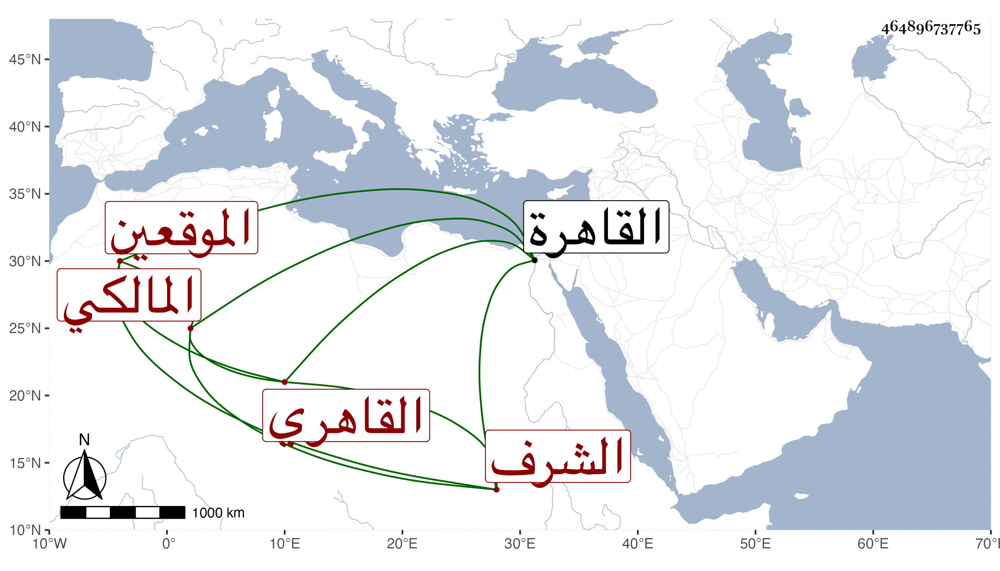

0902Sakhawi.DawLamic.ITO20230111-ara1.EIS1600.464896737765
Biography ID: 464896737765
1001
يحيى بن عمر بن أحمد بن يوسف الشرف القاهري المالكي أحد الموقعين ويعرف بالسفطي نسبة لخال أمه أحد شهود المراكز الشمس محمد بن موسى لوجاهته في الجملة بالنسبة لأبيه . ولد تقريبا سنة ثمان وعشرين وثمانمائة بالقاهرة ونشأ فحفظ القرآن والتلقين لعبد الوهاب في الفقه واشتغل فيما قيل يسيرا عند أبي القسم النويري وجلس مع قريبه المذكور شاهدا فبرع في الشروط وترقى حتى صار أحد أعيان الموقعين بل استنابه الحسام بن حريز في القضاء ثم عمله نقيبا في بابه وباشرهما لمن بعده بل استقر به الأشرف قايتباي في مباشرة أوقاف ابنه ابن الخازن وقصد في القضايا المهمة فتمول وأنشأ مكانا بالجودرية وكان حسن الكتابة والفهم لطيف الشكالة مع ترفع وبأو زائد وتمقت للضعفاء ونحوهم بحيث خدش ذلك في محاسنه وربما تكلم في ديانته . مات في ليلة الثلاثاء رابع عشرى صفر سنة ثمان وسبعين وصلي عليه في محفل عظيم بجامع المارداني ، ودفن بالتنكزية بالقرب من باب القرافة ، وخلف تركة هائلة سوى ما اختلس له قبيل موته عفا الله عنه .
